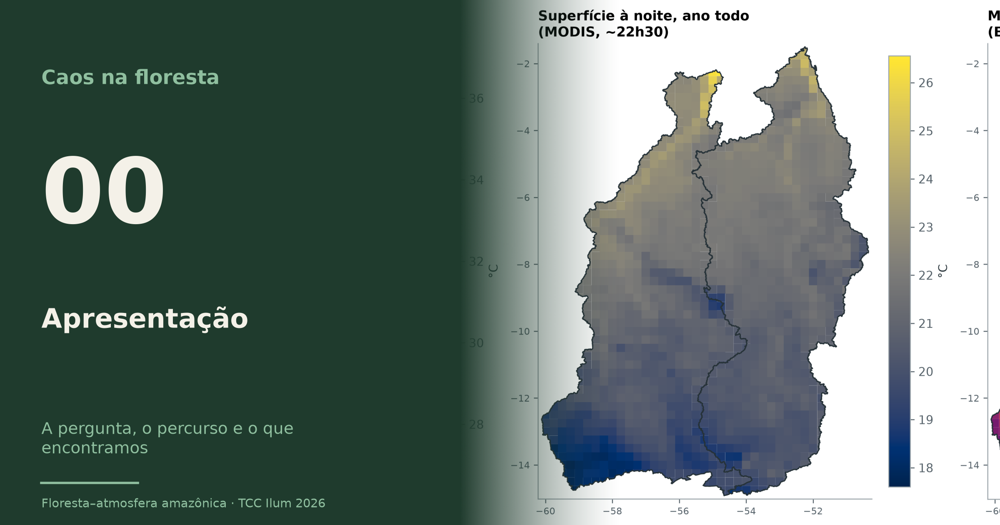
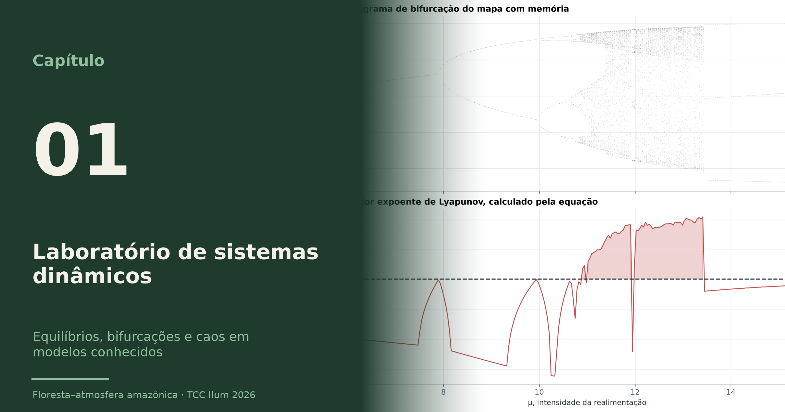
01 · Laboratório de sistemas dinâmicos
Equilíbrios, bifurcações e caos em modelos conhecidos
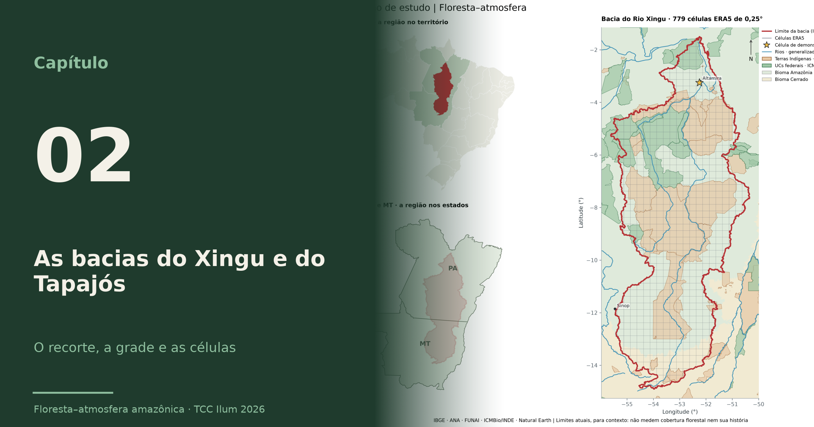
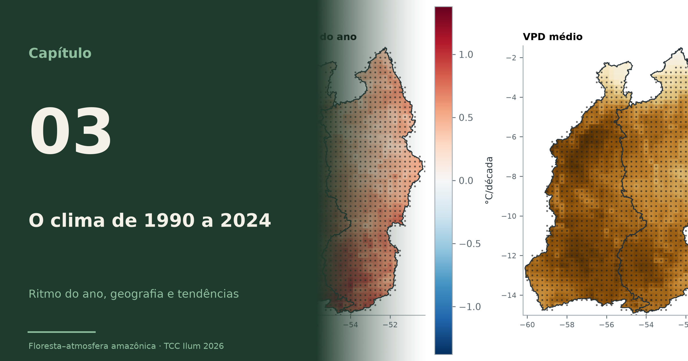
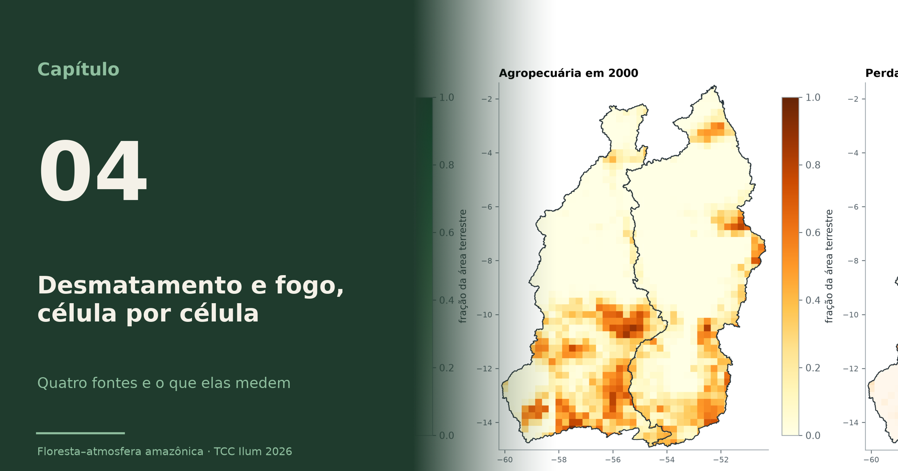
04 · Desmatamento e fogo, célula por célula
Quatro fontes e o que elas medem
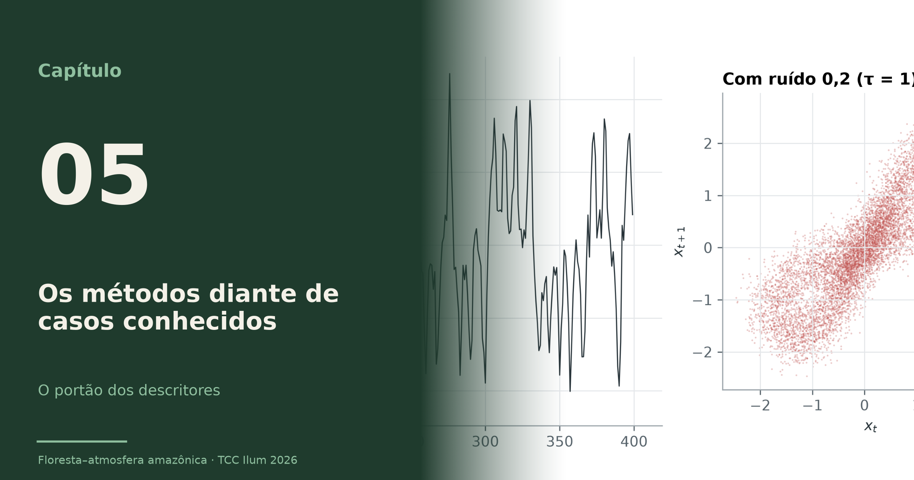
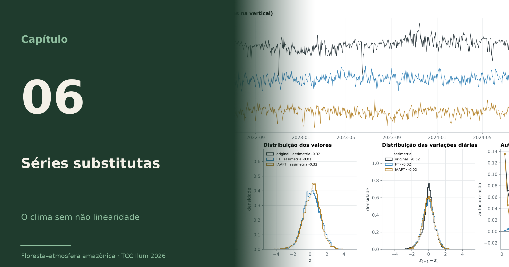
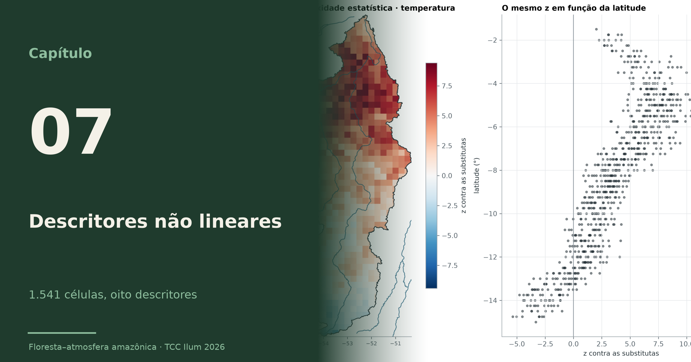
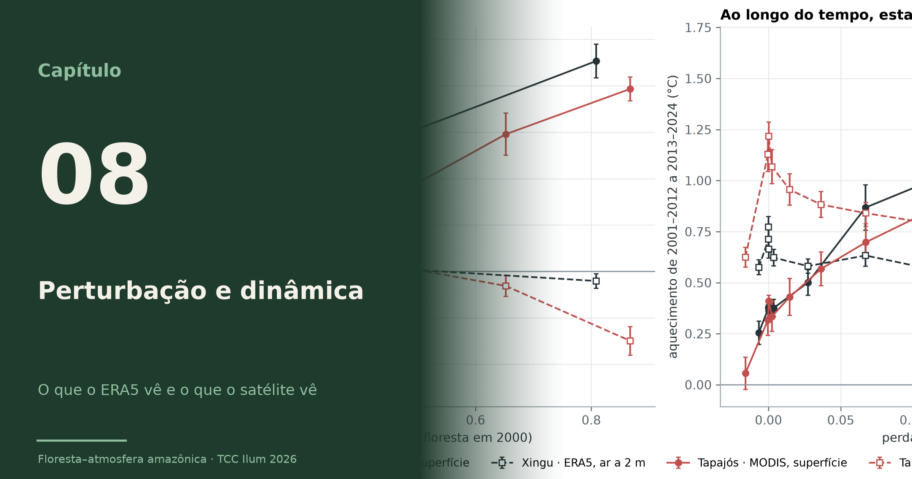
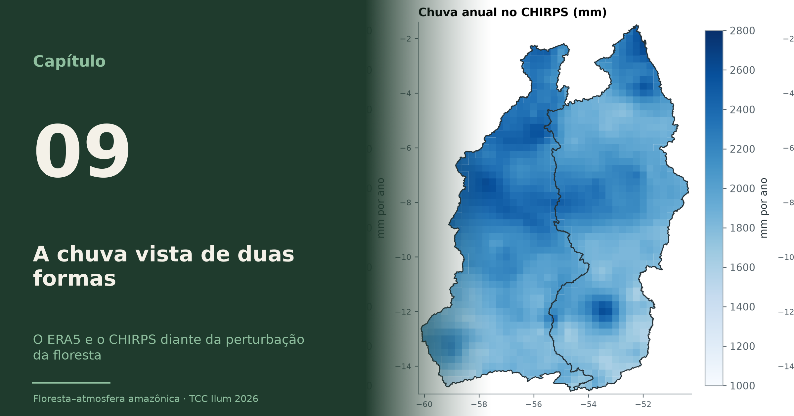
09 · A chuva vista de duas formas
O ERA5 e o CHIRPS diante da perturbação da floresta
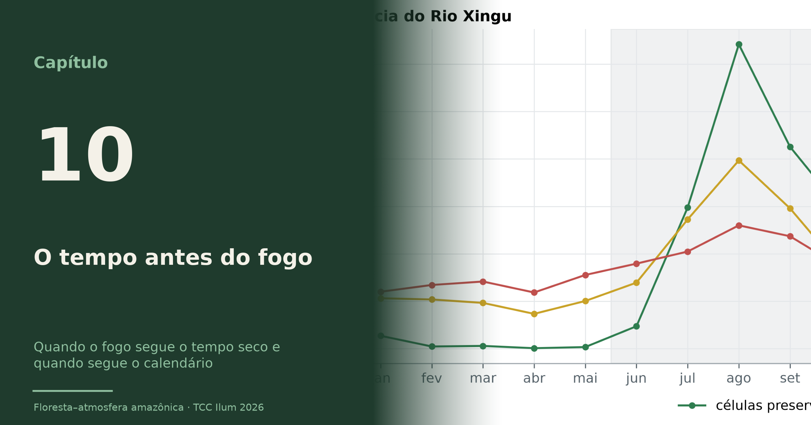
10 · O tempo antes do fogo
Quando o fogo segue o tempo seco e quando segue o calendário
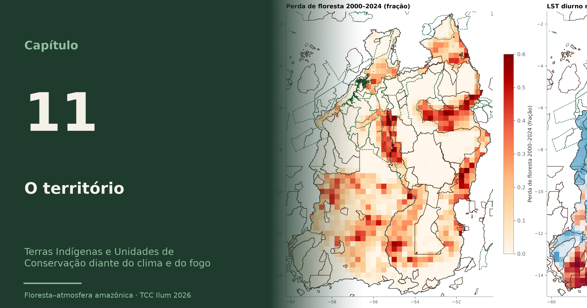
11 · O território
Terras Indígenas e Unidades de Conservação diante do clima e do fogo